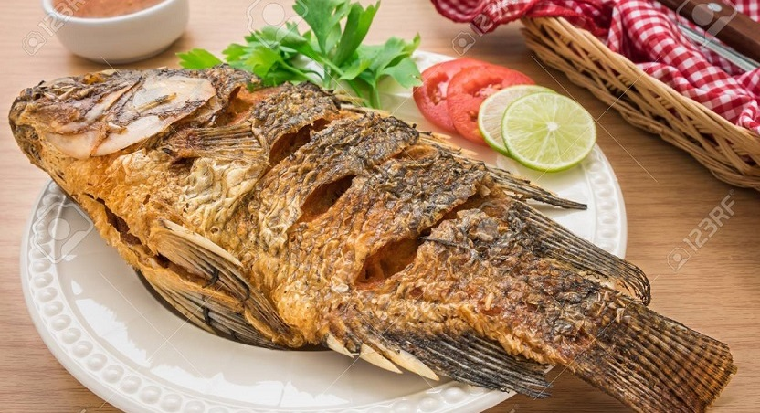

Tipos de comida
La comida rápida es un estilo de alimentación donde el alimento se prepara y sirve para cliente de manera rápida en locales de comida al paso.


La comida rápida es un estilo de alimentación donde el alimento se prepara y sirve para cliente de manera rápida en locales de comida al paso.